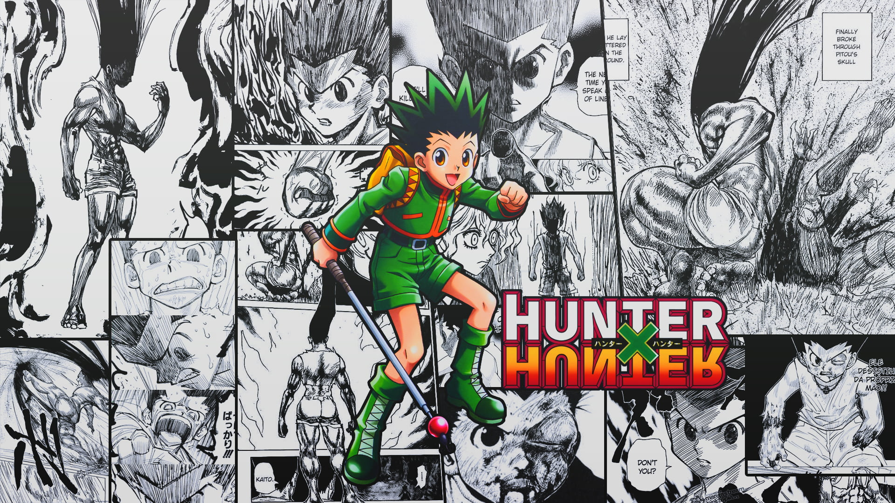
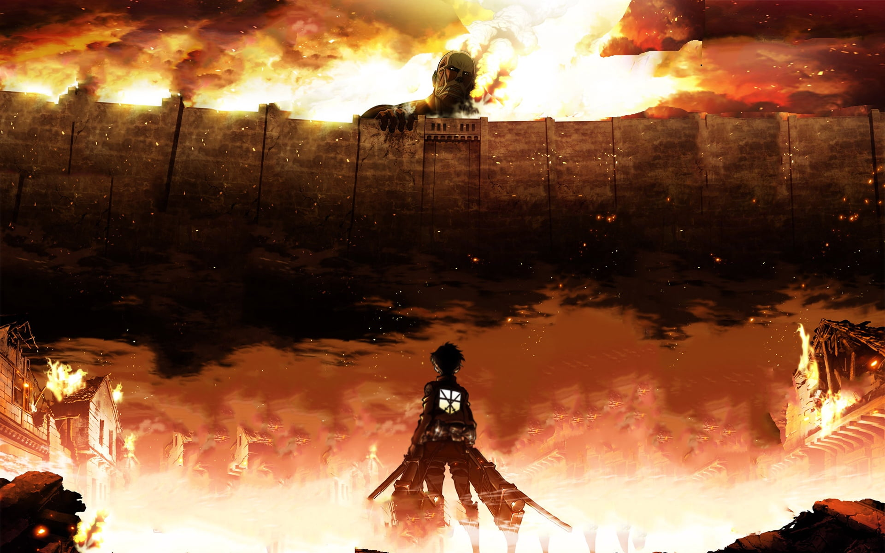

Naruto
Naruto: Shippuden is an anime television series mainly adapted from Part II of Masashi Kishimoto's original Naruto manga series, with exactly 500 episodes. It is set two and a half years after the original series in the Naruto universe, following the ninja teenager Naruto Uzumaki and his allies. The series is directed by Hayato Date, and produced by Pierrot and TV Tokyo. It began broadcasting on February 15, 2007, on TV Tokyo, and concluded on March 23, 2017.[1][2] On January 2, 2009, Viz Media and Crunchyroll provided eight English subtitled Naruto: Shippuden episodes on the official Naruto website.[3] Later the following 2 weeks, Viz began providing subtitled versions of the latest Naruto: Shippuden episodes a week after they first aired in Japan, with a new episode being added to the Naruto website each subsequent Thursday.[3] On July 24, 2009, Viz Media announced that the series would be released on the iTunes Store.[4] The first DVD release of the series in North America was released on September 29, 2009.[5] The English dub of Naruto: Shippuden made its US premiere on Disney XD on October 28, 2009
Hunter x Hunter
Hunter × Hunter (stylized as HUNTER×HUNTER and pronounced "hunter hunter"[3]) is a Japanese manga series written and illustrated by Yoshihiro Togashi. It has been serialized in Shueisha's shōnen manga magazine Weekly Shōnen Jump since March 1998, although the manga has frequently gone on extended hiatuses since 2006. Its chapters have been collected in 37 tankōbon volumes as of November 2022. The story focuses on a young boy named Gon Freecss who discovers that his father, who left him at a young age, is actually a world-renowned Hunter, a licensed professional who specializes in fantastical pursuits such as locating rare or unidentified animal species, treasure hunting, surveying unexplored enclaves, or hunting down lawless individuals. Gon departs on a journey to become a Hunter and eventually find his father. Along the way, Gon meets various other Hunters and encounters the paranormal.
Attack On Titan
Attack on Titan (Japanese: 進撃の巨人, Hepburn: Shingeki no Kyojin, lit. 'The Attacking Giant') is a Japanese dark fantasy anime television series, adapted from the manga series of the same name by Hajime Isayama, that premiered on April 7, 2013. It has aired on MBS TV (first two seasons) and NHK General TV (third season onwards). In North America, the series has been streamed on Crunchyroll, Funimation, and Hulu. Attack on Titan has also aired on Adult Swim's Toonami programming block in the United States. Set in a post-apocalyptic world where the remains of humanity live behind walls protecting them from giant humanoid Titans, Attack on Titan follows protagonist Eren Yeager, along with friends Mikasa Ackerman and Armin Arlert. When a Colossal Titan breaches the wall of their hometown, Titans destroy the city and eat Eren's mother. Vowing vengeance, Eren joins the elite Survey Corps, a group of soldiers who fight against Titans. It chronicles Eren's journey with the Survey Corps as they fight against the Titans while investigating their origin and history.
One Piece

One Piece (stylized in all caps) is a Japanese manga series written and illustrated by Eiichiro Oda. It has been serialized in Shueisha's shōnen manga magazine Weekly Shōnen Jump since July 1997, with its individual chapters compiled into 106 tankōbon volumes as of July 2023. The story follows the adventures of Monkey D. Luffy and his crew, the Straw Hat Pirates, where he explores the Grand Line in search of the mythical treasure known as the "One Piece" in order to become the next King of the Pirates. The manga spawned a media franchise, having been adapted into a festival film by Production I.G, and an anime series by Toei Animation, which began broadcasting in 1999. Additionally, Toei has developed fourteen animated feature films, one original video animation, and thirteen television specials. Several companies have developed various types of merchandising and media, such as a trading card game and numerous video games. The manga series was licensed for an English language release in North America and the United Kingdom by Viz Media and in Australia by Madman Entertainment. The anime series was licensed by 4Kids Entertainment for an English-language release in North America in 2004 before the license was dropped and subsequently acquired by Funimation in 2007.